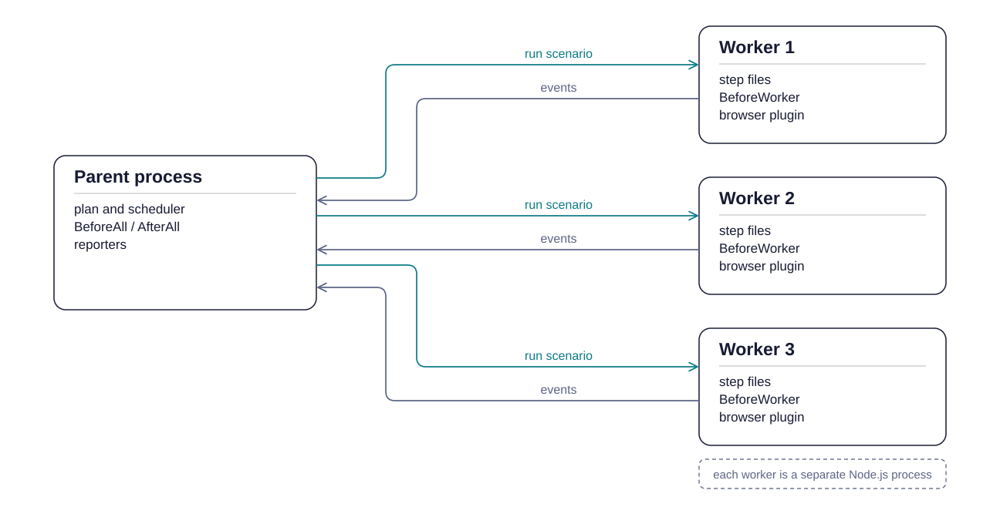

Worker processes
By default bddr runs scenarios as concurrent async tasks in one process. Switch to the process pool when you want real CPU parallelism or isolation from crashes.
Two pools
pool: 'inline' (default) | pool: 'process' | |
|---|---|---|
| How it runs | Async concurrency in one Node.js process. workers sets the number of lanes. | One Node.js process per lane. |
| Good for | API tests and small suites. Fast start. | Browser suites and CPU-heavy steps. A crash only fails one scenario. |
| Worker hooks | Once per run. | Once in every worker process. |
| Memory and globals | Shared by all scenarios. | Separate per process. |
$ npx bddr run --workers 4 --pool processexport default defineConfig({
workers: 4,
pool: 'process',
});What the parent and the workers do
- The parent process owns the plan, the scheduling, the reports and the
BeforeAllandAfterAllhooks. - Each worker loads your step files and rebuilds the same plan. bddr compares a fingerprint of the plan, so a worker that loaded different files stops the run instead of running the wrong thing.
- The values you set in
BeforeAllonctx.runare copied to every worker. - Each worker gets the environment variables
BDDR_WORKER_IDandBDDR_WORKER_INDEX. Use the index to pick a port or a test account per worker.

Crashes
If a worker process dies in the middle of a scenario, only that scenario fails and the lane starts a new process. Its After hooks do not run. Set retry.workerCrash to retry the scenario on a fresh process. If a worker cannot start at all, the run stops.
Sharing data between workers
Things that are per process with the process pool:
ctx.featureandctx.groupsstores, and module-level variables.- Feature, group and rule hooks. They run once in each process that runs a member.
To share a value, use ctx.export and ctx.from (see Dependencies), or an external system such as a database.